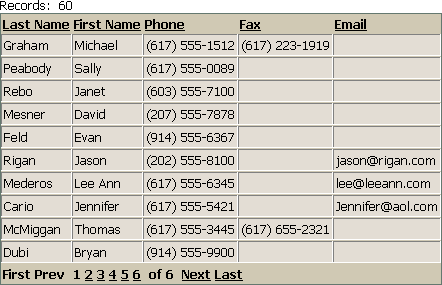
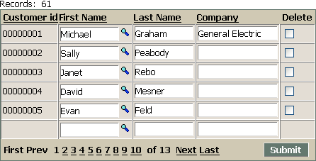

Hiding Controls That are Filled by a Lookup
All fields that you want to modify must be on a grid, even if you want to populate these fields with a lookup. But what if you wish to hide the fields that the user does not directly edit or input? The following is a solution to this application problem.
This example is based on the customer table of the AlphaSports sample database.
Create a new read-only tabular grid based on the AlphaSports customer table.
Place and format the lastname, firstname, phone, fax, and email fields.
Save this grid with the name "cust_look_to". It should look something like this.

Create an editable tabular grid based on the customer table of the AlphaSports sample database.
Place and format the customer_ID, lastname, firstname, phone, fax, email, and company fields.
Select the customer_ID field in the Selected fields list and change its Display Settings > Control type property to "Label".
Select the firstname field in the Selected fields list:
Change its Lookup > Lookup property to TRUE (checked).
Click
 in its Lookup Properties > Lookup definition property to display the Define Lookup Window dialog.
in its Lookup Properties > Lookup definition property to display the Define Lookup Window dialog.Select "cust_look_to" in the Lookup Window > Grid name list.
Click
in its Field Mapping > Field map property to display the Define Field Mapping dialog.Add entries that map the lastname, firstname, phone, fax, email, and company source fields to target fields.
Click OK > OK to continue.
Select the company field in the Selected fields list.
Change its Display Settings > Control type property to "Label".
Change its Column Properties > Freeform layout property to TRUE (checked).
Click
in its Column Properties > Freeform template property to display the Freeform Column Layout dialog.Define the layout as {Company}{Phone}{Fax}{Email} and click OK.
Select the phone field in the Selected fields list:
Change its Display Settings > Control type property to "Hidden".
Change its Column Properties > Hide column property to TRUE (checked).
Select the fax field in the Selected fields list:
Change its Display Settings > Control type property to "Hidden".
Change its Column Properties > Hide column property to TRUE (checked).
Select the email field in the Selected fields list:
Change its Display Settings > Control type property to "Hidden".
Change its Column Properties > Hide column property to TRUE (checked).
Save this grid with the name "cust_look_from". It should look something like this.

Place the "cust_look_from" grid on a page. Publish both grids and the page. When you look up a record, you will see all 5 fields in the "cust_look_to" grid, but only 2 of those fields on the "cust_look_from" grid. The other 3 will be hidden.
See Also